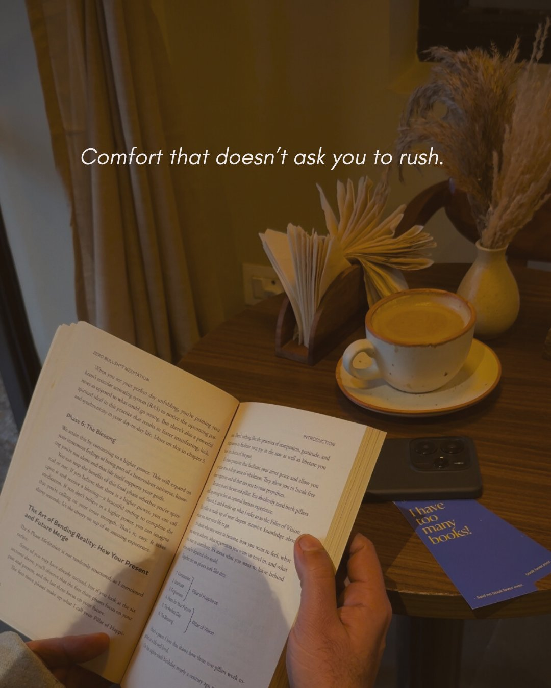

Quiet cafes in South Delhi — at a glance
| Cafe | Area | Quiet level | Best for | Genuinely quiet when |
|---|---|---|---|---|
| Kunzum Travel Cafe | Hauz Khas Village | High | Reading, long stays | Always |
| Solchemi | Shahpur Jat | High | Reading, slow afternoons | Always — by design |
| Ivy & Bean | Shahpur Jat | High | Book cafe, solo visits | Weekday mornings |
| USCO (upstairs) | Shahpur Jat | Medium | Short solo sessions | Weekday afternoons |
| Cafe Dori | Dhan Mill, Chhatarpur | Medium | Work, reading | Weekday mornings |
| Blue Tokai (GK) | Greater Kailash | Medium | Quick focused sessions | Weekday mornings only |
| Diggin | Anand Lok | Low evenings | Garden, casual | Weekday lunch only |
Quiet cafes in Shahpur Jat & Hauz Khas
The most reliably calm cluster in South Delhi — Kunzum in Hauz Khas Village and several genuinely quiet spots in Shahpur Jat, all within 10 minutes of each other.
One of South Delhi's most genuinely quiet spaces — and it's been that way for years. A community cafe built for writers, readers and travellers. Pay what you feel. Walls covered in travel photos and quotes. No loud music, no rush. The antithesis of the busy Hauz Khas Village around it.

The quietest full-service cafe in South Delhi. No background music competing with your thoughts, no one watching the clock. Come with a book, a notebook, or nothing at all. A reading corner and an art corner with canvas sit at the back — open to anyone. Specialty coffee and fresh food when you're ready.
A dedicated book cafe in Shahpur Jat — pastel interiors, a proper library shelf, and a menu that includes coffee, pasta and salads. Built for solo reading visits and slow afternoons. Can get more social on weekends; go on a weekday morning for the calmest experience. The atmosphere for reading is genuine even if the Google rating is modest.

Downstairs can be sociable — head upstairs and it's a different place. Genuinely calm, rarely crowded. Good cappuccino and Vietnamese cold coffee. Best for shorter quiet sessions — limited food means it's not ideal for all-afternoon stays. Card games on the tables if you need a break from your book.
Quiet cafes in other parts of South Delhi
Further south or prefer a different neighbourhood — these two are worth knowing.
European-style minimal interiors, natural light and a calm daytime atmosphere inside the Dhan Mill creative compound. Popular with professionals who want a quiet place to read or work. Quietest on weekday mornings before lunch crowds arrive.
The GK outlet is calmer than busier Blue Tokai branches. Good for a focused 1–2 hour session on a weekday morning. Fills up fast by noon — reliable for a quiet start to the day with a well-made coffee, less so for slow full afternoons.
Cafes that appear in "quiet" searches — but aren't always
These come up frequently when people search for peaceful cafes in South Delhi. Worth knowing what you're walking into.